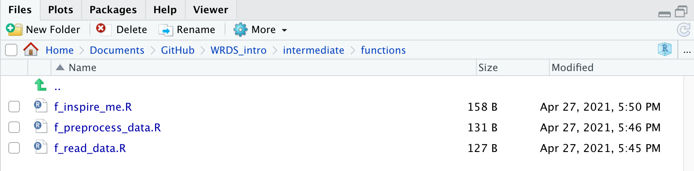

Approaches towards organization and efficiency.
Learning objectives
{here}.RProfile and .Renviron files{renv}The first step in any data science project is to set up and maintain a clean, predictable development environment. As you accumulate raw data, write code, and generate results, things can get messy. In this module we’ll cover how to keep your projects organized, streamlined, and reproducible.
Although this is an intermediate level course, we will revisit introductory material on “Project Management” because no matter your skill level in R, sound project management remains fundamental. Subsequent modules in this course assume familiarity with {here}, .Rprojects, naming conventions, and general best practices.
After reviewing core introductory topics, we will discuss .RProfile and .Renviron files and when to use them.
If you have user or project-level code that needs to be run every time you start up R, .RProfile can streamline this operation.
The .RProfile file is an actual .R file that is automatically sourced as R code when you open an R session. A .RProfile file can live in the project root directory, or the user’s home directory.
The easiest and most consistent way to edit your .RProfile file across operating systems is with the {usethis} package. usethis::edit_r_profile() by default opens your user .RProfile.
usethis::edit_r_profile()
You can edit the project-level .RProfile with the scope argument.
usethis::edit_r_profile(scope = "project")
Only one .RProfile can be loaded. If a project-level .Rprofile exists, it supercedes the user level .Rprofile.
To illustrate how .RProfile works, let’s do something cool and useless. We’ll write a short progam that greets us with a random joke, and then we’ll put in .RProfile so it runs whenever we start up R.
The {cowsay} package is a fun way to print text animal art.
cowsay::say(what = "hello world!", by = "cow")
-----
hello world!
------
\ ^__^
\ (oo)\ ________
(__)\ )\ /\
||------w|
|| ||Let’s randomize the animal displayed and make the message it says one of the motivational quotes found at this Github repo, copy and paste the code into our .RProfile, and restart R.
animals <- names(cowsay::animals)
quotes <- readr::read_csv("https://gist.githubusercontent.com/JakubPetriska/060958fd744ca34f099e947cd080b540/raw/963b5a9355f04741239407320ac973a6096cd7b6/quotes.csv")
quotes$full_quote <- paste0(quotes$Quote, " -", quotes$Author)
cowsay::say(sample(quotes$full_quote, 1), by = sample(animals, 1))
rm(animals, quotes) # remove the objects we just created
Sometimes you need to store sensitive information, like API Keys, Database passwords, data storage paths, or general variables used across all scripts. We don’t want to accidentally share these information, accidentally push them to Github, or copy and paste them over and over again from script to script. We also might want to build a codebase that relies on a few variables that another user can set in their own system in a way that works for them. Environmental variables are the way to address all of these concerns.
Environmental variables are simply objects that store character strings. They are accessible from within R upon startup. To view all environmental variables, use Sys.getenv().You can also pull out one environmental variable at a time by calling it by name, for instance:
Sys.getenv("USER")
[1] "richpauloo"You can set your own environmental variables which are stored in another hidden file (like .RProfile) called .Renviron (this is the Python analog of .env).
To illustrate the use of .Renviron, we use usethis::edit_r_environ(), add the environmental variable ANIMAL = "cow", save and restart R.
usethis::edit_r_environ()
We can access our environmental variable (remember you need to restart R for changes to take effect) as follows:
Sys.getenv("ANIMAL")
[1] "cow"We can use our environmental variable, for instance, in a function.
inspire_me <- function(animal){
suppressMessages(
quotes <- readr::read_csv("https://gist.githubusercontent.com/JakubPetriska/060958fd744ca34f099e947cd080b540/raw/963b5a9355f04741239407320ac973a6096cd7b6/quotes.csv")
)
quotes$full_quote <- paste0(quotes$Quote, " -", quotes$Author)
cowsay::say(sample(quotes$full_quote, 1), by = animal)
}
inspire_me(Sys.getenv("ANIMAL"))
-----
We know from science that nothing in the universe exists as an isolated or independent entity. -Margaret Wheatley
------
\ ^__^
\ (oo)\ ________
(__)\ )\ /\
||------w|
|| ||Although it may not appear powerful in this trivial example, when a project grows substantially large and complex, or when managing multiple sensitive passwords and access tokens, environmental variables should be what you reach for.
Best practices for writing code across languages typically recommend moving package imports and function definitions to the top of a script, followed by code. For example:
# import packages
library(<package 1>)
library(<package 2>)
# define functions
my_first_function <- function(){
print("hello")
}
my_second_function <- function(){
print("world")
}
# code
my_first_function()
my_second_function()These approaches work well when scripts are relatively simple, but as a project grows large and complex, it’s best practice to abstract functions into another script or set of scripts, and break up your workflow into discrete steps.
For instance, although the inspire_me() function above is relatively simple, we can pretend that the read, transform, and print steps carried out in the function were themselves long functions in part of a much more complex, real-world workflow. Imagine we created a script called functions.R that contained the following code:
# list packages in a vector and load them all
pkgs <- c("readr", "cowsay")
purrr::walk(pkgs, require, character.only = TRUE)
# read quotes from a url
f_read_data <- function(url){
suppressMessages(
quotes <- read_csv(url)
)
return(quotes)
}
# paste the quote to the author
f_preprocess_data <- function(d){
d$full_quote <- paste0(d$Quote, " -", d$Author)
return(d)
}
# print a random animal and a random quote
f_inspire_me <- function(d){
animals <- names(animals)
say(sample(d$full_quote, 1), by = sample(animals, 1))
}
We can call this script using source() to bring the functions into our environment.
source(here("functions.R"))
However, this is hardly a satisfying solution because in a real project, our pretend functions above may grow quite large, and we will likely add more and more functions, such that script that holds them all, functions.R may become many hundreds of lines long, making it difficult to sift through and make debug or add new lines of code. Let’s now move these functions to a directory /functions and store them all as separate files named after their function name:
Save as /functions/f_read_data.R:
# read quotes from a url
f_read_data <- function(url){
suppressMessages(
quotes <- read_csv(url)
)
return(quotes)
}
Save as /functions/f_preprocess_data.R:
Save as /functions/f_inspire_me.R:
The functions folder in the root project directory should now look like this:

Now in our /code directory, we create a script, 01_control.R to source our functions and use them. Be sure to restart R to clear your environment before sourcing this control script.
Save as /code/01_control.R:
# packages needed for this script
pkgs <- c("readr", "cowsay", "here", "tidyverse")
purrr::walk(pkgs, require, character.only = TRUE)
# silently source all functions
walk(list.files(here("functions"), full.names = TRUE), ~source(.x))
# define the url where quotes are located
url <- "https://gist.githubusercontent.com/JakubPetriska/060958fd744ca34f099e947cd080b540/raw/963b5a9355f04741239407320ac973a6096cd7b6/quotes.csv"
# use all of our functions
f_read_data(url) %>%
f_preprocess_data() %>%
f_inspire_me()
-----
It is easier to live through someone else than to become complete yourself. -Betty Friedan
------
\
\ __
/ \
| |
@ @
|| ||
|| ||
|\_/|
\___/ GBsource() is the key to chaining together many scripts. In the example above, we were able to abstract functions into a separate folder which makes keeping track of them much easier than if they were cluttering our control script.
Learn more
Separating all functions into standalone scripts is not a revolutionary idea – in fact, this is precisely how R packages are written! For example, see the {dplyr} github repo’s /R folder which contains all dplyr functions in one directory. When you call library(dplyr) you’re essentially sourcing all of these functions into your environment.
If project management and reproducible data pipelines are interesting to you, check out the {drake} R package. A similar framework for Shiny Apps exists called {golem}, which also includes {usethis}-like commands that streamline common chores in Shiny App development.
We use {here} because whoever opens your code will have a different project root path, and {here} ensures our code is portable between different users with different root project paths (e.g., ~/Documents/Github/myproject v C:\Users\louis\Documents\myproject).
Development environments are similar. When we work in R – or any programming language for that matter – we use a snapshot of package versions based on when we downloaded and installed them (e.g. with install.packages()). You can check the version of the installed packages loaded into your current environment with sessionInfo().
R version 4.0.2 (2020-06-22)
Platform: x86_64-apple-darwin17.0 (64-bit)
Running under: macOS Catalina 10.15.6
Matrix products: default
BLAS: /Library/Frameworks/R.framework/Versions/4.0/Resources/lib/libRblas.dylib
LAPACK: /Library/Frameworks/R.framework/Versions/4.0/Resources/lib/libRlapack.dylib
locale:
[1] en_US.UTF-8/en_US.UTF-8/en_US.UTF-8/C/en_US.UTF-8/en_US.UTF-8
attached base packages:
[1] stats graphics grDevices utils datasets methods
[7] base
other attached packages:
[1] forcats_0.5.1 stringr_1.4.0 dplyr_1.0.4 purrr_0.3.4
[5] tidyr_1.1.2 tibble_3.1.0 tidyverse_1.3.0 here_0.1
[9] cowsay_0.8.0 readr_1.4.0 knitr_1.30 ggplot2_3.3.3
loaded via a namespace (and not attached):
[1] tidyselect_1.1.0 xfun_0.22 haven_2.3.1
[4] colorspace_2.0-0 vctrs_0.3.7 generics_0.1.0
[7] htmltools_0.5.1.1 usethis_2.0.0 yaml_2.2.1
[10] utf8_1.2.1 rlang_0.4.10 gridtext_0.1.4
[13] pillar_1.5.1 glue_1.4.2 withr_2.4.1
[16] DBI_1.1.1 dbplyr_2.1.0 readxl_1.3.1
[19] modelr_0.1.8 fortunes_1.5-4 lifecycle_1.0.0
[22] cellranger_1.1.0 munsell_0.5.0 gtable_0.3.0
[25] rvest_0.3.6 evaluate_0.14 curl_4.3
[28] fansi_0.4.2 broom_0.7.0 Rcpp_1.0.6
[31] scales_1.1.1 backports_1.1.10 jsonlite_1.7.2
[34] fs_1.5.0 rmsfact_0.0.3 distill_1.2
[37] hms_1.0.0 png_0.1-7 digest_0.6.27
[40] stringi_1.5.3 grid_4.0.2 rprojroot_1.3-2
[43] cli_2.4.0 tools_4.0.2 magrittr_2.0.1
[46] crayon_1.4.1 pkgconfig_2.0.3 downlit_0.2.1
[49] ellipsis_0.3.1 xml2_1.3.2 reprex_0.3.0
[52] lubridate_1.7.9.2 httr_1.4.2 assertthat_0.2.1
[55] rmarkdown_2.7 rstudioapi_0.11 R6_2.5.0
[58] ggtext_0.1.1 compiler_4.0.2 The version number is the string of numbers listed after a package name and underscore.
Similarly, you can use installed.packages() to view information on your installed packages.
When packages change between versions, changes are typically designed to fix bugs or improve performance, but sometimes, they can break code. Thus, collaborative work on a project may be challenged by people working on the same code but with different versions of packages.
The solution to this problem is for everyone to use the same versions of packages (and R), which is to say that collaborators should use the same development environment. This is a common concept across programming languages.
{renv} manages your package environment and makes it easy to share it with others by creating and curating a “lock” file, renv.lock in the root project directory. When starting a project, create the file with renv::init(), install packages as you go along, and update the lockfile with renv::snapshot(). When a collaborator opens your project (for example, after cloning it from Github), all they need to do is open the .RProj file and {renv} will bootstrap itself and set up the development environment captured in the lock file.
If you find yourself needing to share important analyses, perhaps that run on a production server, you should look into {renv}. For most day-to-day data science though, it may be unnecessary.